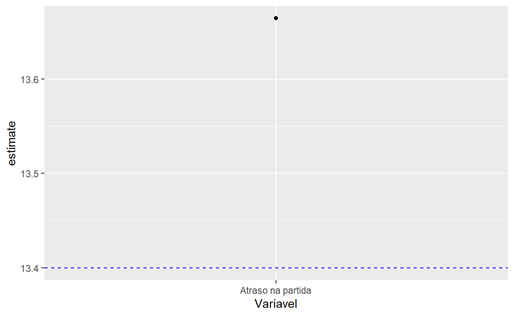
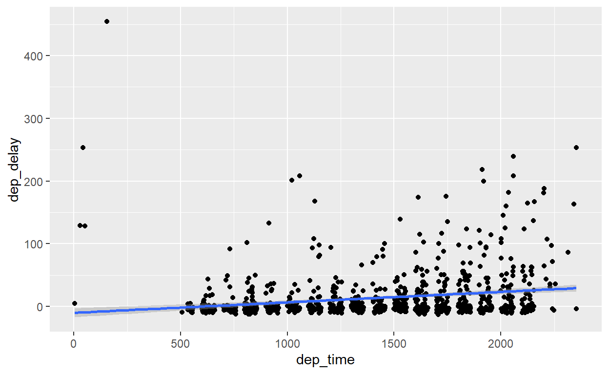

Clique aqui para assistir o vídeo da aula online do dia 28 de maio de 2021. E o chat.
Não se preocupe se você não esteja treinado em métodos quantitativos - não discutimos os detalhes de estatística aqui. Mas é comum aplicar um teste simples ou uma regressão aos nossos dados para avaliar alguma hipótese, e sabendo como fazer isto é um bom treinamento para construir fluxos de análise mais complexos para outros objetivos também.
Os pontos cruciais de testes estatísticos são os seguintes:
Podemos ilustrar com um exemplo: suponha que você é um funcionário do governo e quer avaliar o desempenho de um grupo de alunos participando num programa de apoio, comparando com não-participantes. Mas as notas dos alunos também variam por muitos motivos que não têm nada a ver com o programa. A nota média dos participantes é 72, e dos não-participantes 70. Isso é uma diferença real, ou apenas uma variação aleatória? A hipótese nula que precisamos avaliar é que as duas médias são iguais, e o teste é uma comparação dos dados com a distribuição de valores apropriada - a distribuição ‘t’ neste caso. Observe que a conclusão depende da quantidade e variabilidade dos nossos dados - com 40 alunos em cada grupo, não é uma diferença estatisticamente significativa (ex. um valor p de 0.37), mas com 400 alunos em cada grupo, é diferente (ex. um valor p de 0.002, assumindo um desvio padrão de notas de 10, e um limiar de significância de 0.05).
No R, as funções de testes estatísticos e regressões são mais diversas e menos padronizadas que as funções que já discutimos no resto do curso. Assim, é crucial entender o classe/tipo de objeto que a função espera, e o resultado que ela produz. A nossa tarefa é usar o nosso pipe para preparar os dados no classe/formato apropriado.
O nosso primeiro teste é um teste de como os nossos dados são distribuidos. Dados contínuos frequentemente formam uma distribuição ‘normal’ quando temos um número razoável de observações (a linha preta no gráfico abaixo). Podemos avaliar o fato/hipótese nula que os nossos dados são distribuido de forma ‘normal’ com um teste que se chama o teste Shapiro-Wilk. Ele compara os nossos dados com uma distribuição normal perfeita e avalia o quão longe da normal são os nossos dados.
Usamos o teste Shapiro-Wilk através da função shapiro.test() e ela espera um vetor dos valores da variável que queremos testar. Então temos que isolar um vetor (não um tibble) para encaminhar usando a função pull(). Vamos avaliar se os atrasos dos vôos (dep_delay) são distribuidos normalmente:
flights %>%
pull(dep_delay) %>%
shapiro.test()
Ah, o R pediu que limitamos os nossos dados para um máximo de 5000 para simplificar o teste. Tudo bem, vamos pegar uma amostra aleatória de 3000 observações:
teste_normalidade <- flights %>% sample_n(3000) %>%
pull(dep_delay) %>%
shapiro.test()
teste_normalidade
Shapiro-Wilk normality test
data: .
W = 0.50308, p-value < 0.00000000000000022Ótimo - veja o resultado do teste: Há um estatístico de teste ‘W’ e um valor ‘p’ para avaliar a significância do teste. O valor ‘p’ é bem pequeno aqui, indicando que tem pouco chance que os nossos dados são normais.
Habilidade Básica de Programação: Números Científicos
Às vezes parece que os nossos números foram corrompidos, sobretudo com testes estatísticos: Qual espécie de número é “2.2e-6”??
É um número, sim, um número muito grande ou muito pequeno que o R escolha mostra no formato ‘científico’. “2.2e-6” indica o número de dígitos pelo qual temos que mexer o ponto decimal (a vírgula) para chegar no valor final. Aqui é 6 espaços, igual a 0,0000022. Se for “2.2e+6”, seria 2200000,0.
Você não precisa fazer nada com os seus dados, o valor é salvo como um número completo com todos os seus dígitos. A diferença é só na apresentação do valor na tela.
Mas é verdade que às vezes preferimos valores mais fáceis para interpretar. Uma dica para encorajar o R não usar o formato científico é inserir o seguinte código no início do seu script:
options(scipen=999)
Dá para verificar que a distribuição de atrasos não parece normal com um gráfico de densidade. Em vez de uma distribuição simétrica, temos uma cauda longa no lado direito.
flights %>%
ggplot() +
geom_density(aes(x=dep_delay)) +
xlim(0,100)
Qual foi o tipo de objeto criado pela shapiro.test()?
class(teste_normalidade)
[1] "htest"É do tipo ‘htest’, que é um formato proprietário que é muito difícil incorporar em nosso texto, ou em uma tabela. Por exemplo, eu quero inserir no meu relatório final a frase “O teste Shapiro-Wilk de normalidade da variável dep_delay tem valor ‘p’ de [X]”. Como eu posso inserir o valor de ‘X’ da teste com in-line código?
Pode ser muito chato se preciseramos fazer de forma manual. Porém, felizmente, existe uma outra biblioteca/função dedicada a ajudar nessa situação, simplificando e padronizando os resultados de testes estatísticos. Qual é o objeto com quem estamos mais acostumados a trabalhar? É o tibble, lembre que quase tudo foi um tibble! Esse é a magia da biblioteca broom e a função tidy - ela transforme os resultados de testes estatísticos em um tibble:
teste_normalidade
Muito melhor! Agora temos todos os detalhes do teste num tibble, e é fácil extrair os valores desejados, por exemplo:
O teste Shapiro-Wilk de normalidade da variável dep_delay tem valor ‘p’ de `r teste_normalidade %>% pull(p.value) %>% round(3)`.
O teste Shapiro-Wilk de normalidade da variável dep_delay tem valor ‘p’ de 0.
Observe que usamos round(3) no final do fluxo para arredondar os valores numéricos.
Nós podemos usar tidy depois da maioria de testes estatísticos, e também regressões, para simplificar a apresentação dos resultados.
Uma outra família de testes estatísticos é testes de médias, amplamante conhecidos como ‘t-tests’. Começamos com um teste simples: a nossa média é estatisticamente diferente de um valor específico? Imagine, por exemplo, que as companhias aéreas tinham um atraso médio de 13.4 minutos em 2012 - o valor média em 2013 foi diferente?
Este teste exige uma comparação entre os nossos dados e o valor ‘13.4’, então vamos encaminhar o vetor de atrasos para a função t.test(), especificando o argumento mu para o valor de comparação (o 13.4). E não esquecemos de usar tidy() no final para simplificar o resultado:
Recebemos muitas informações aqui: a média dos nossos dados é 13.66, pouco acima de 13.4. Mas isso é longe de 13.4 ou próximo? Depende da quantidade de observações. O intervalo de confiança (de 95%) é de 13.49 a 13.83, e o valor ‘p’ é 0.0018, debaixo da padrão comum de 0.05. Então o restulado fica estatisticamente significativa; parece que o atraso média em 2013 realmente é diferente do valor de 13.4 em 2012.
Para comunicar os resultados do t-test, é frequentemente útil gerar gráficos para mostrar a média e o intervalo de confiança. Como podemos construir um gráfico deste tipo? Vamos começar com o parte mais fácil: colocamos a média dos nossos dados (um ponto com geom_point) e uma linha horizontal para indicar o ponto de comparação (com geom_hline que gera uma linha horizontal):
teste_media %>% mutate(Variavel="Atraso na partida") %>%
ggplot() +
geom_point(aes(x=Variavel, y=estimate)) +
geom_hline(yintercept=13.4, lty=2, color="blue")

Observe aqui que adicionamos uma coluna com o nome da variável em nosso tibble antes de visualizá-la para que podemos incorporar o nome daquela variável em nosso gráfico. Em breve, quando temos múltiplas variáveis para analisar, podemos nomear eles de forma sistemática. O formato dos resultados num tibble facilita bastante a preparação do gráfico.
Agora, vamos adicionar uma linha que mostra o intervalo de confiança (as variáveis ‘conf.low’ e ‘conf.high’), com a geometria geom_errorbar(), que exige três variáveis: x, ymin e ymax para definir os limites da linha baseado nos valores em nosso tibble:
teste_media %>% mutate(Variavel="Atraso na partida") %>%
ggplot() +
geom_point(aes(x=Variavel, y=estimate)) +
geom_hline(yintercept=13.4, lty=2, color="blue") +
geom_errorbar(aes(x=Variavel, ymin=conf.low, ymax=conf.high), width=0.1)
É fácil ver no gráfico que o intervalo de confiança de 95% não sobreposiciona o valor de 13.4, significando que o atraso subiu estatisticamente em 2013.
Que tal se não temos um ponto de comparação fixa, mas queremos comparar se a média em um grupo é diferente da média num outro grupo? Isso significa que dividimos os nossos dados baseado numa variável categórica em nosso tibble, e comparamos as duas distribuições pela variável contínua. Por exemplo, queremos comparar se o atraso média do aeroporto ‘EWR’ é estatisticamente diferente do atraso média no aeroporto ‘JFK’.
Podemos continuar usando a função t.test, mas agora que temos que definir uma variável discreta e uma variável contínua, precisamos encaminhar o nosso tibble completo e não um vetor (uma variável única), então não precisamos do passo de pull(). Em vez disso, e dado que estamos usando funções fora do tidyverse, temos que indicar para t.test que ela deve trabalhar com os dados que estamos encaminhando pelo pipe com o argumento data=.. (Lembre-se que o ‘.’ significa para R usar os dados produzidos no fluxo do pipe anterior).
Há mais um ajuste necessário: Vários testes, incluindo t.test, exigem que definimos este análise usando uma fórmula, com a variável contínua na esquerda e a variável discreta (os grupos que queremos comparar) na direita: dep_delay ~ origin. Pode ler esta fórumla assim: Pega os dados de atrasos, e divida-os por aeroporto de origem.
Habilidade Básica de Programação: Fórmulas
Uma fórmula é simplesmente uma sintaxe para comparar uma variável dependente (o resultado que queremos comparar) e variáveis independentes (que dividem os nossos dados em grupos ou nós achamos podem correlacionar com a variável dependente).
A variável dependente sempre fica na esquerda, e está separada das variáveis independentes com o símbolo ~. Por exemplo:
dependente ~ independente
Podemos adicionar mais vaiáveis independentes com o símbolo ‘+’:
dependente ~ independente1 + independente2
Fórmulas são usadas em vários contextos, incluindo testes estatísticos e regressões.
Vamos realizar o teste para avaliar se a média de atrasos é ígual entre JFK e EWR:
Note que filtramos os dados para deixar apenas dois valores na variável origin (o t-test só funciona com dois grupos). O resultado contém muita informação - o ‘estimate’ é a diferença de médias, o ‘estimate1’ a média no primeiro aeroporto (‘EWR’), e o ‘estimate2’ a média no segundo aeroporto (‘JFK’). E temos o valor ‘p’ e o intervalo de confiança. Parece que realmente há uma diferencá significativa, com um atraso média maior em Newark (EWR).
Este tipo de teste é muito comum porque sempre queremos comparar entre grupos. Por exemplo, um t-test deste tipo é a análise feito quando rodamos um experimento para comparar dois grupos: tratamento e controle.
Sabemos que existe uma associação entre o atraso médio e o aeroporto - entre uma variável contínua e uma variável discreta. Como podemos comparar a associação entre duas variáveis contínuas? Por exemplo, atraso (dep_delay) e horário de partida (dep_time)?
Associação neste caso se chama ‘correlação’ e compara todos os valores das duas variáveis contínuas, e não simplesmente as médias. A avaliação do teste de correlação é calcular o coeficiente de correlação (de tipo Pearson, por padrão; basicamente a inclinação da linha entre os pontos no gráfico), que pode ser positivo ou negativo, e comparar com zero, pois zero indica nenhuma correlação.
Rodando o teste é fácil: encaminhamos o nosso tibble para cor.test(), com data=., e a fórmula agora tem duas variáveis independentes e nenhuma dependente (dado que estamos tratando as variáveis igualmente). Como sempre, tidy() ajuda para organizar os resultados.
Os resultados indicam um coeficiente de correlação de 0.26 (positivo), e um valor ‘p’ de zero. Interpretando: há uma correlação positiva e estatisticamente significativa entre o horário de partida e o atraso. Ou seja, é melhor voar mais cedo!
É fácil usar um gráfico de pontos e uma linha (geom_smooth()) para mostrar essa correlação positiva visualmente:
flights %>% sample_n(1000) %>%
ggplot() +
geom_point(aes(x=dep_time, y=dep_delay)) +
geom_smooth(aes(x=dep_time, y=dep_delay), method="lm")

Para completar a tipologia de testes, como podemos comparar duas variáveis categóricas? Por exemplo, queremos comparar as variáveis origin (origem) e carrier (companhia aérea) para saber - estatisticamente - se as mesmas companhias voam de cada aeroporto com a mesma frequência.
Nesta circunstância, é apropriado aplicar um teste ‘chi-squared’, usando a função chisq.test(). O formato que a função exige é uma ‘tabela de contingência’ - todas as combinações das duas variáveis possíveis e o número de observações (vôos) para cada combinação.
Felizmente, é fácil construir essa tabela de contingência com a função table(), com um select anterior para definir as duas variáveis que queremos comparar:
carrier
origin 9E AA AS B6 DL EV F9 FL HA MQ
EWR 1268 3487 714 6557 4342 43939 0 0 0 2276
JFK 14651 13783 0 42076 20701 1408 0 0 342 7193
LGA 2541 15459 0 6002 23067 8826 685 3260 0 16928
carrier
origin OO UA US VX WN YV
EWR 6 46087 4405 1566 6188 0
JFK 0 4534 2995 3596 0 0
LGA 26 8044 13136 0 6087 601Faz sentido? A tabela mostra o número de voos de cada aeroporto e cada companhia aérea. É meio-óbvio que a distribuição das companhias é diferente por cada aeroporto, mas vamos testar isso estatisticamente:
O valor ‘p’ de zero indica que realmente existe uma diferença nas companhias que voam de cada aeroport.
Exercício 1: Testes Estatísticos
rnorm(1000, 0, 1) para gerar um vetor de 1000 observações aleatoriamente da distribuição normal. Avalie se os valores gerados sejam realmente distribuido de forma normal com um teste Shapiro-Wilk.rnorm(1000, 0, 1) %>%
shapiro.test() %>%
tidy()
planes, teste se a média do ano de fabricação dos voos de fabricador Boeing seja diferente de 2000.weather, qual é a correlação entre temperatura (temp) e pressão (pressure)?geom_errorbar() para comunicar o intervalo de confiança da estimativa de correlação em questão 4. Adicione uma linha horizontal para comparar com uma correlação de zero.weather %>%
filter(origin != "EWR") %>%
cor.test(~temp + pressure, data = .) %>%
tidy() %>%
mutate(Variavel = "Correlação entre temperatura e pressão") %>%
ggplot() + geom_point(aes(x = Variavel, y = estimate)) + geom_hline(yintercept = 0,
lty = 2, color = "blue") + geom_errorbar(aes(x = Variavel, ymin = conf.low,
ymax = conf.high), width = 0.1)
Regressão é correlação. Nada muito mais complexo que isso, então não fica com medo - rodar uma regressão é uma linha única de código, parecido com os testes que executamos acima. Existem variadades infinitas de regressões, e os detalhes ficam fora do curso. Mas é importante entender como a manipular os bancos de dados e os resultados de regressões porque ninguém vai ensinar isso numa disciplina de regressão, e entendendo a preparação de dados facilita bastante o seu foco no entendimento e interpretação de regressão.
Começamos com a regressão mais simples, um modelo linear, apropriado para variáveis dependentes contínuas. A função é lm(), e indicando data=. podemos passar os nossos dados diretamente para ela no fluxo de pipe. É só inserir a fórmula que define a nossa regressão, como sempre com a variável dependente na esquerda e as variáveis independentes (explicativas) na direita. Por exemplo:
Call:
lm(formula = dep_delay ~ dep_time, data = .)
Coefficients:
(Intercept) dep_time
-16.27245 0.02143 É simples assim!
Okay, mas o resultado aqui é complexo e não muito claro. Há duas opções para pedir mais detalhes da regressão:
summary() para gerar uma tabela de regressão (com coeficientes e desvios padrões dos coeficientes) e várias estatísticas, mas num formato terrível. Isto é útil para uma avaliação inicial, mas não ajuda para relatórios profissionais.
Call:
lm(formula = dep_delay ~ dep_time, data = .)
Residuals:
Min 1Q Median 3Q Max
-70.44 -18.69 -8.08 1.18 1303.54
Coefficients:
Estimate Std. Error t value Pr(>|t|)
(Intercept) -16.2724518 0.1990372 -81.76 <0.0000000000000002 ***
dep_time 0.0214301 0.0001387 154.48 <0.0000000000000002 ***
---
Signif. codes: 0 '***' 0.001 '**' 0.01 '*' 0.05 '.' 0.1 ' ' 1
Residual standard error: 38.82 on 328519 degrees of freedom
(8255 observations deleted due to missingness)
Multiple R-squared: 0.06772, Adjusted R-squared: 0.06772
F-statistic: 2.386e+04 on 1 and 328519 DF, p-value: < 0.00000000000000022tidy() para gerar um tibble com os coeficientes e os seus estatísticos.A segunda opção é geralmente o mais útil para relatórios, pois podemos continuar com as nossas funções normais como filter e select para organizar o resultado. Vamos ver em breve alternativas para gerar diretamente tabelas mais bonitas.
Observe que gerando regressões mais complexas só precisa de ajustes na fórmula. Por exemplo para adicionar mais variáveis independentes:
Para especificar uma relação entre uma variável independente e o dependente não-linear, ex. quadrático, temos que usar a função I(), por exemplo:
É muito comum compartilhar os resultados da nossa regressão em uma tabela profissional. Existem várias funções que facilitam este processo; vamos usar stargazer, da biblioteca do mesmo nome. Podemos preparar tabelas em vários formatos, para HTML ou para PDF (com latex, que vamos explorar na aula que vem). PDF é o padrão então se quisemos tabelas de HTML, temos que especificar o argumento type="html".
Cuidado: Existe mais uma ajuste necessária. Lembre-se das opções de chunks que especificamos, como echo=FALSE para não mostrar o nosso código? Com stargazer temos que especificar results='asis' nas opções de chunk para que o resultado saia corretamente quando usamos ‘knit’. Veja o exemplo:
```{r, results='asis'}
library(stargazer)
flights %>% lm(dep_delay ~ dep_time + origin, data=.) %>%
stargazer(type="html")
```| Dependent variable: | |
| dep_delay | |
| dep_time | 0.022*** |
| (0.0001) | |
| originJFK | -4.327*** |
| (0.163) | |
| originLGA | -4.190*** |
| (0.166) | |
| Constant | -13.655*** |
| (0.217) | |
| Observations | 328,521 |
| R2 | 0.070 |
| Adjusted R2 | 0.070 |
| Residual Std. Error | 38.771 (df = 328517) |
| F Statistic | 8,280.601*** (df = 3; 328517) |
| Note: | p<0.1; p<0.05; p<0.01 |
Uma tabela bem-formatada com pouco esforço! É possível ajustar todos os elementos da tabela usando os milhares de argumentos da função stargazer. Por exemplo, podemos especificar um título, renomear as variáveis, ajuste a localização dos desvíos padrões, e escolhar as estatísticas desejadas.
library(stargazer)
flights %>% lm(dep_delay ~ dep_time + origin, data=.) %>%
stargazer(type="html", title="Modelo de Atraso de Vôos",
single.row = T, keep.stat = c("n"),
dep.var.labels="Atraso",
covariate.labels=c("Horário", "JFK", "LGA"),
header=F, dep.var.caption="")
| Atraso | |
| Horário | 0.022*** (0.0001) |
| JFK | -4.327*** (0.163) |
| LGA | -4.190*** (0.166) |
| Constant | -13.655*** (0.217) |
| Observations | 328,521 |
| Note: | p<0.1; p<0.05; p<0.01 |
Em caso que você querer comparar dois modelos parecidos na mesma tabela, é só salvar as duas regressões como objetos, e encaminhar eles juntos na forma de uma list() para stargazer:
reg1 <- flights %>% lm(dep_delay ~ dep_time, data=.)
reg2 <- flights %>% lm(dep_delay ~ dep_time + origin, data=.)
list(reg1, reg2) %>% stargazer(type="html")
| Dependent variable: | ||
| dep_delay | ||
| (1) | (2) | |
| dep_time | 0.021*** | 0.022*** |
| (0.0001) | (0.0001) | |
| originJFK | -4.327*** | |
| (0.163) | ||
| originLGA | -4.190*** | |
| (0.166) | ||
| Constant | -16.272*** | -13.655*** |
| (0.199) | (0.217) | |
| Observations | 328,521 | 328,521 |
| R2 | 0.068 | 0.070 |
| Adjusted R2 | 0.068 | 0.070 |
| Residual Std. Error | 38.825 (df = 328519) | 38.771 (df = 328517) |
| F Statistic | 23,863.440*** (df = 1; 328519) | 8,280.601*** (df = 3; 328517) |
| Note: | p<0.1; p<0.05; p<0.01 | |
As tabelas de regressão ainda exigem bastante esforço para interpretar. Visualizando os coeficientes de uma regressão é fácil com a combinação de tidy() e ggplot(). Vamos visualizar as nossas estimativas dos efeitos marginais das duas variáveis explicativas no ‘reg2’ criado acima. A única coisa que faltamos é um intervalo de confiança pré-calculada, mas isso é fácil calcular: para o intervalo de confiança de 95%, só ajustamos a nossa estimativa central por 1.96 (o valor correspondente a 95% na distrbuição t) multiplicado pelo desvio padrão, para acima e para abaixo. Também vou tirar o intercept - observe que tudo isso é fácil usando as nossas funções bem conhecidas como mutate e filter porque tidy nos permite trabalhar com um tibble.
reg2 %>% tidy() %>%
mutate(conf.lo=estimate-1.96*std.error,
conf.hi=estimate+1.96*std.error) %>%
filter(term!="(Intercept)") %>%
ggplot() +
geom_point(aes(x=term, y=estimate)) +
geom_errorbar(aes(x=term, y=estimate, ymin=conf.lo, ymax=conf.hi), width=0.1) +
geom_hline(yintercept=0, lty=2)
A partir desta seção, não se preocupe se você não tem muita preperação prévia. Pode acompanhar os exemplos mesmo assim, ou pular para o final do tutorial se preferir.
Uma regressão linear é apenas uma das possibilidades. O tipo de regressão reflete o tipo de dado em nossa variável dependente. Usamos uma regressão linear apenas quando a nossa variável dependente é contínua. Variáveis dependentes binárias (0/1), por exemplo, exigem um modelo de regressão de tipo ‘logit’ (ou ‘probit’).
Para acomodar uma variedade de modelos vamos aproveitar do pacote Zelig que aceita várias possibilidades.
A função zelig é bem parecida à lm. Para replicar o modelo linear nos exemplos acima, é só trocar lm para zelig e adicionar `model=“ls”:
Os resultados são iguais, e vamos ver em breve como a encaminhar eles para tabelas/gráficos.
O poder de zelig é facilitando modelos alternativos. Primeiro, vamos ver como a usar um modelo ‘logit’ para variáveis dependentes binárias, por exemplo a presença de um atraso. Precisamos simplesmente especificar model="logit":
Model:
Call:
z5$zelig(formula = formula, data = data, by = by)
Deviance Residuals:
Min 1Q Median 3Q Max
-1.0706 -0.9740 -0.8814 1.2881 1.5057
Coefficients:
Estimate Std. Error z value Pr(>|z|)
(Intercept) -0.256505 0.005801 -44.22 <0.0000000000000002
originJFK -0.242781 0.008478 -28.64 <0.0000000000000002
originLGA -0.488579 0.008799 -55.53 <0.0000000000000002
(Dispersion parameter for binomial family taken to be 1)
Null deviance: 447727 on 336775 degrees of freedom
Residual deviance: 444598 on 336773 degrees of freedom
AIC: 444604
Number of Fisher Scoring iterations: 4
Next step: Use 'setx' methodA tabela abaixo mostra o modelo sugerido (existem muitos) para cada tipo de dado usando zelig():
| Tipo de Variável Dependente | Model em Zelig |
|---|---|
| Contínuo |
ls
|
| Binário |
logit
|
| >2 Categorias |
mlogit
|
| Categorias Ordenadas |
ologit
|
| Contagem (número de eventos em um período fixo) |
poisson
|
Agora temos um poder enorme. Para ilustrar, se estajamos interessados em analisar o número de vôos atrasados por mais de quatro horas em cada dia, a variável é um número de eventos então preciseramos de um modelo ‘poisson’. É fácil especificar:
Model:
Call:
z5$zelig(formula = formula, data = data, by = by)
Deviance Residuals:
Min 1Q Median 3Q Max
-1.7501 -1.7106 -1.5368 -0.1709 12.5852
Coefficients:
Estimate Std. Error z value Pr(>|z|)
(Intercept) 0.42625 0.04230 10.078 < 0.0000000000000002
originJFK -0.26004 0.06410 -4.057 0.0000498
originLGA -0.04575 0.06051 -0.756 0.45
(Dispersion parameter for poisson family taken to be 1)
Null deviance: 3944.4 on 1094 degrees of freedom
Residual deviance: 3925.9 on 1092 degrees of freedom
AIC: 5259.8
Number of Fisher Scoring iterations: 6
Next step: Use 'setx' methodVeja nos resultados que atrasos de mais de quatro horas são menos prováveis (coeficiente negativo) em JFK comparando com EWR (a categoria ‘base’), mas não tem diferença estatisticamente significativa entre LGA e EWR.
Organizando os resultados de Zelig exige mais um passo para encaminhar os resultados ao Stargazer para criar tabelas, com a função de ajuda from_zelig_model():
| Dependent variable: | |
| atraso | |
| originJFK | -0.243*** |
| (0.008) | |
| originLGA | -0.489*** |
| (0.009) | |
| Constant | -0.257*** |
| (0.006) | |
| Observations | 336,776 |
| Log Likelihood | -222,299.000 |
| Akaike Inf. Crit. | 444,604.000 |
| Note: | p<0.1; p<0.05; p<0.01 |
Uma regressão também gera novos dados para cada observação - por exemplo, o valor da variável dependente prevista por nossa regressão, ou os resíduos entre o valor atual e o valor previsto. Dado que há um valor para cada observação, faz sentido adicionar estes valores ao nosso banco de dados (tibble) original.
A função augment() (do pacote broom) permite isso - começando com o nosso modelo rodado acima, augment() gera um novo tibble com os dados originais usados na regressão, mais as colunas adicionais com os resultados da regressão.
Uma regressão é também uma ‘maquina’ para prever o que vai acontecer com a variável dependente quando as variáveis independentes assumem valores específicos. Claro que a qualidade da previsão pode ser terrível se o modelo não seja correta.
Com o zelig, é fácil gerar essas previsões para valores novos. Seguimos a nossa regressão com uma definição dos valores de variáveis independentes que queremos avaliar usando a função setx(), com um valor para cada variável, e depois a função sim(), sem argumento. Por exemplo, se rodamos um modelo linear para prever o atraso com o horário de partida das 5h na manhã:
sim x :
-----
ev
mean sd 50% 2.5% 97.5%
1 -5.554096 0.1374694 -5.552973 -5.816669 -5.280309
pv
mean sd 50% 2.5% 97.5%
[1,] -4.306131 39.53559 -4.689806 -85.39364 70.92373
Call:
lm(formula = dep_delay ~ dep_time, data = .)
Coefficients:
(Intercept) dep_time
-16.27245 0.02143 Qual é o resultado? São valores previstos - a linha de ‘ev’ é a previsão do atraso se voamos as 5h da manhã, -5.5 minutos na média, que significa que voos nesse horário, em média, decolam 5.5 minutos antes do horário previsto.
Em contraste, quando especificamos o horário de partido das 17h, o atraso média é 20 minutos. (Note que se tivéssemos mais variáveis explicativas, o setx automaticamente fixa os valores na média da variável se não especificamos elas explicitamente.)
Finalmente, podemos avaliar a diferença em atraso entre os dois horários, com a adição da função setx1() para especificar o ponto de comparação com setx():
sim x :
-----
ev
mean sd 50% 2.5% 97.5%
1 -5.556242 0.1363321 -5.554838 -5.820189 -5.284274
pv
mean sd 50% 2.5% 97.5%
[1,] -6.429133 39.01868 -6.9923 -83.51135 72.86603
sim x1 :
-----
ev
mean sd 50% 2.5% 97.5%
1 20.15619 0.08287173 20.15704 19.9925 20.32219
pv
mean sd 50% 2.5% 97.5%
[1,] 19.49994 37.48289 19.02482 -53.57535 93.89565
fd
mean sd 50% 2.5% 97.5%
1 25.71243 0.1645674 25.71065 25.38607 26.02857Agora, foca-se na linha fd, que mostra uma diferença de 25.7 minutos na média: muito melhor voar cedo!
Como todas as nossas estimativas de regressões, nunca temos certeza sobre as relações - existe incerteza sobre os nossas estimativas - e o zelig deixa fácil mostrar isso com mais um passo no fluxo de funções. Com get_qi() podemos gerar uma distribuiçõ simulada - uma nova variável - de estimativas da diferença média, incorporando o desvío padrão de incerteza.
Agora, é fácil visualizar essa distribuição:
diff_simulacoes %>% as_tibble() %>%
rename("Diff"=`1`) %>%
ggplot() +
geom_density(aes(x=Diff)) +
ggtitle("Atraso Médio Adicional Estimada para voar as 17h em vez de 5h") +
theme_minimal()
Exercício 2: Regressões
precip, variável dependente) e as três variáveis pressão (pressure), temperatura (temp) e humidade (humid) no banco de dados weather? Qual dessas três variáveis tem relação positiva com a variável dependente, e qual uma relação negativa?origin ao modelo de questão 1. Mostre os seus dois modelos juntos numa tabela apropriada.dep_time, distance e origin.Zelig para prever quanto mais provável é que um vôo tenha mais de três horas de duração quando a distância aumenta de 700 para 1300 kilometros.modelo_tres_horas <- flights %>%
mutate(mais_de_tres_horas = case_when(air_time > 180 ~ 1, TRUE ~ 0)) %>%
mutate(origin = factor(origin)) %>%
zelig(mais_de_tres_horas ~ dep_time + distance + origin, data = .,
model = "logit")
modelo_tres_horas %>%
setx(distance = 700) %>%
setx1(distance = 1300) %>%
sim()
Preparação para Tutorial 10
Antes da próxima aula sobre relatórios reproduzíveis com Git e Latex, por favor tente preparar o seu computador:
Instale git no seu computador.
Crie uma conta no site github.
Instale o TinyTex (uma versão apropriada de Latex) usando o seguinte código em RStudio:
install.packages('tinytex')
tinytex::install_tinytex()